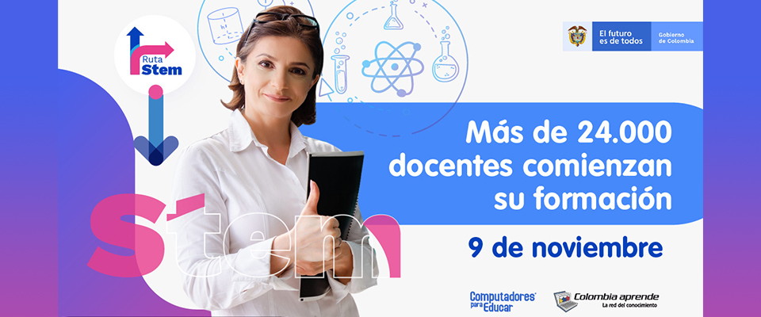

Mediante Ruta STEM más de 24.000 docentes desarrollarán habilidades.
Este 9 de noviembre se inició el proceso de formación de más de 24.000 docentes inscritos en el marco del proyecto Ruta STEM (Ciencia, Tecnología, Ingeniería y Matemáticas, por sus siglas en inglés), y a través del cual se espera incentivar a los niños, niñas y adolescentes a desarrollar competencias del siglo XXI.
Ver noticia completa>>